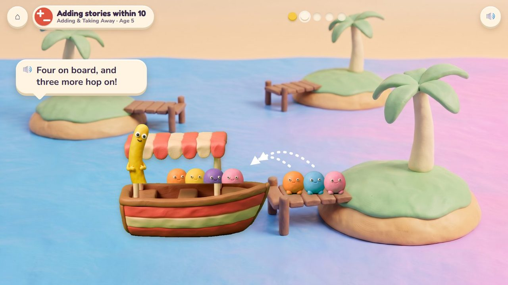
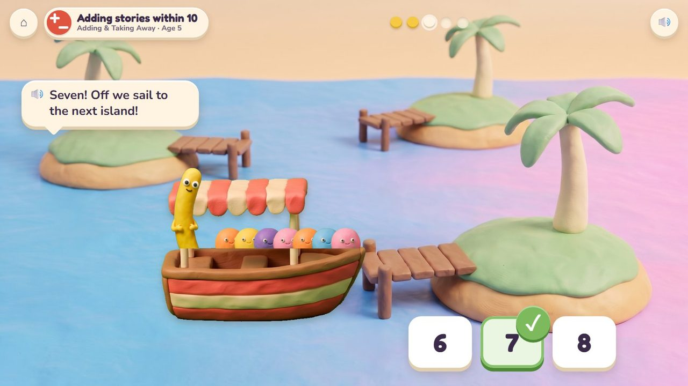
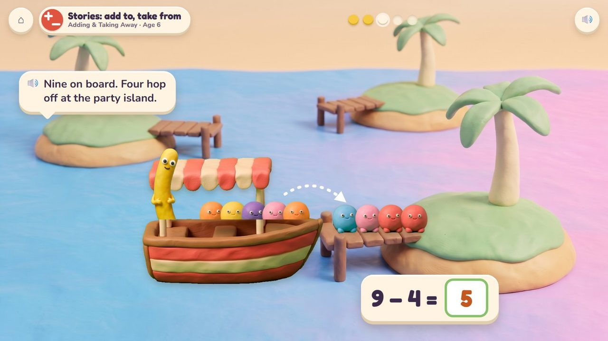
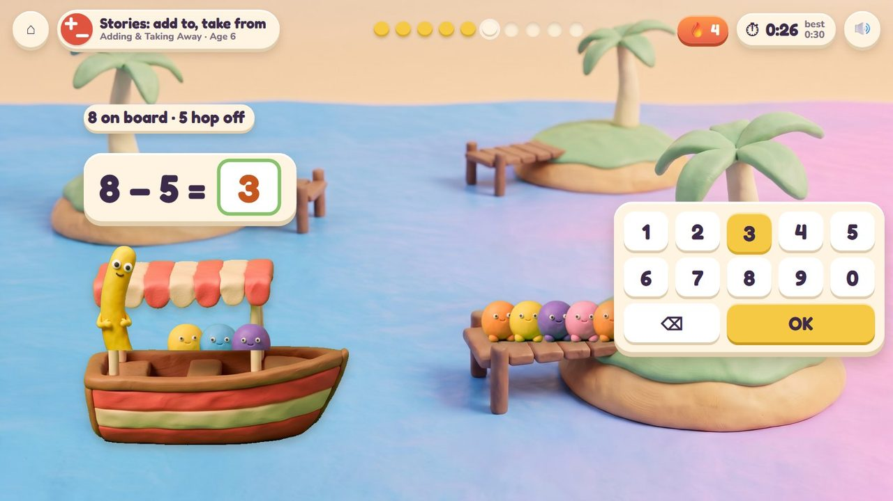
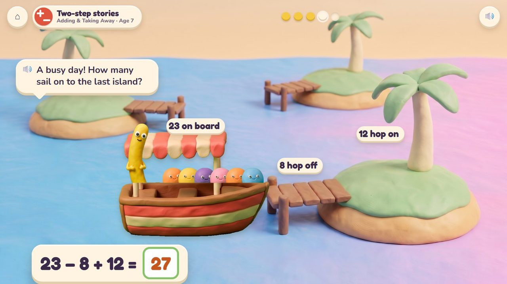
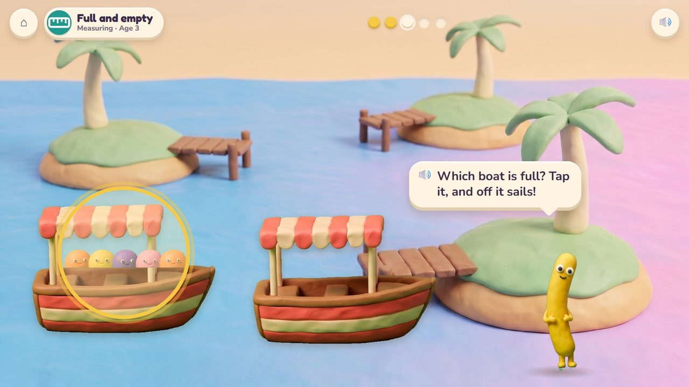

Captain Noodle's boat stops at the islands: Peeps hop on and off. How many sail on?
14 lessons (12 taught here first, the rest practised here) in 2 topics:
Adding & Taking AwayMeasuring

Noodle's little boat sails from island to island. At each jetty some Peeps hop on and some hop off, and before the boat sails on the child says how many are aboard: one tap, or the number pad. It is a story problem you can see: add to, take from, put together, how many more, two steps. The youngest just send the full boat off.
Tap Peeps to hop them on or off; tap the number; tap the horn to sail.
The last island: the Peeps' beach party.
A storyboard of the game in one lesson, drawn from the app's own clay pictures.
Adding stories, age 5: four on board, three hop on.
🔊 “Four on board, and three more hop on!”

One tap: 7. Then the boat sails.
🔊 “Seven! Off we sail to the next island!”

Age 6: nine on board, four hop off: 9 − 4 = 5.
🔊 “Nine on board. Four hop off at the party island.”

Age 6: the story is told, type the answer. Timed.
The story is told and the boat is loaded: type how many are aboard (8 on board, 5 hop off: 3). Ten questions at 6-7, a 60-second round from 8; your time and your best on screen; only right answers count; a miss shows the answer and comes back later. No clock under 6.
The badge at the top left says the topic, the lesson and the age.

23 on board, 8 hop off, 12 hop on: 27 sail on.

Which boat is full? Tap it, and off it sails.
| Age 3Pre-school | Full and empty: which boat is full? |
| Age 4Pre-K | Story time: how many now? Take away from 5; which boat holds more? |
| Age 5Kindergarten | Adding and take-away stories within 10. |
| Age 6Grade 1 | Stories: add to, take from, put together, take apart, how many more; three numbers. |
| Age 7Grade 2 | One-step and two-step stories within 100. |
up to 5 at 4, 10 at 5, 20 at 6, 100 at 7
hop on, hop off, two boats, two stops
the Peeps can be counted one by one; after a miss the story is shown again, step by step
one tap at 3 to 5; the number pad from 6
Age by age they are on the full list; here grouped by topic (the first activity named teaches a lesson, the others practise it).
early yearsIsland Hopper · Poke Palsearly yearsIsland Hopper · Poke PalsK.OA.1Island Hopper · Poke PalsK.OA.2Island Hopper · Poke Pals · Treasure ShopK.OA.2Island Hopper · Treasure Shop1.OA.1Island Hopper · Treasure Shop1.OA.1Island Hopper · Critter Maker1.OA.1Seesaw Twins · Island Hopper1.OA.2Island Hopper · Critter Maker2.OA.1Island Hopper · Treasure Shop2.OA.1Island Hopper · Treasure Shopearly yearsIsland Hopperearly yearsIsland HopperK.MD.2Kart Cup · Island Hopper